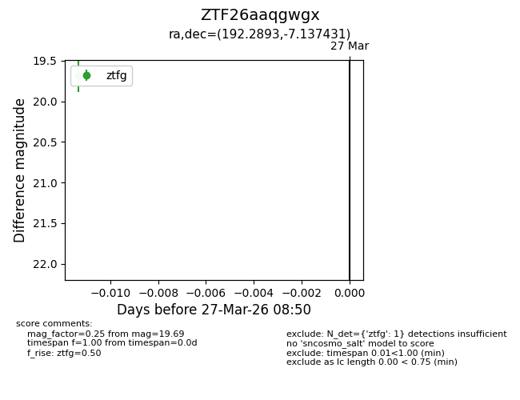
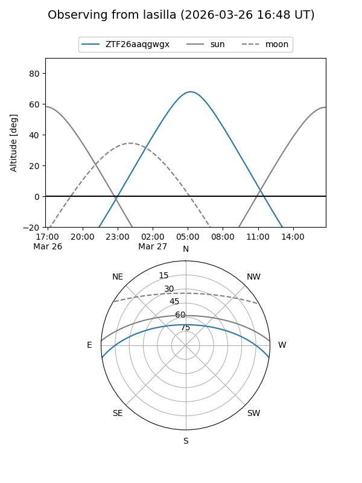
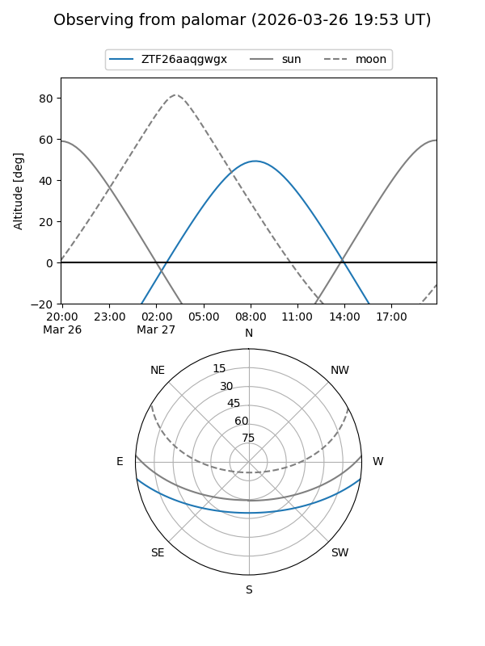

ZTF26aaqgwgx
Target ZTF26aaqgwgx at 2026-03-27 08:53
Aliases and brokers:
FINK: link
Lasair: link
ALeRCE: link
alt names
ZTF26aaqgwgx (ztf,fink_ztf)
Coordinates:
equatorial (ra, dec) = 192.2893,-7.13743
equatorial (HMS+DMS) = 12:49:09.44,-07:08:14.75
galactic (l, b) = (301.9272,+55.72987)
Flags:
Photometry:
last ztfg=19.69
1 ztfg detections
Lightcurve

Visibility


Additional plots